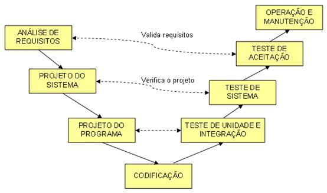
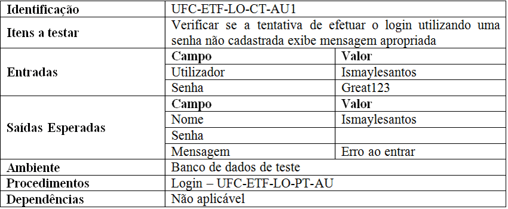

Documentos de Teste
padrão apresentado neste artigo é o IEEE 829, está relacionado com o processo de teste etapa do processo de desenvolvimento de software de suma importância para garantia e controle da qualidade. Sua abrangência vai desde testes unitários até testes de aceitação e tem por objetivo definir documentos consistentes e adequados capazes de definir, registrar e prover condições de análise dos resultados obtidos ao longo do processo.
Informações provenientes dos resultados dos testes podem ser utilizadas como insumo para composição de indicadores de produtividade de uma célula de trabalho, fonte de informação valiosa para uma das principais dimensões da gerência de configuração, a medição.
Sua abrangência está relacionada com todo e qualquer software que seja passível de ser testado, presente no mundo digital, desde softwares utilizados por centros médicos até softwares utilizados pelo exército, independente de sua complexidade.
Plano de teste
Descreve o escopo dos testes a serem realizados, a abordagem e os recursos que serão utilizados como ferramenta de apoio, por exemplo: softwares de automação, para realização de testes unitários e de integração, softwares de varredura de código (teste de cobertura) para identificação de áreas ou trechos que não estão sendo utilizados (este item é conhecido como Complexidade Ciclomática). O planejamento contempla a elaboração de um cronograma contendo todas as atividades e responsáveis por sua execução.
Casos de teste
Define o conjunto de casos de teste a serem realizados, por exemplo: Itens a serem testados, especificação das entradas e saídas esperadas, premissas e restrições do ambiente onde o teste deverá ocorrer.
Conclusão
O Documento de Teste nos ensina a importância da realização dos testes de sistemas como hardware ou software para corrigir e evitar erros.
Referências
https://www.devmedia.com.br/ciclos-de-vida-do-software/21099
https://pt.scribd.com/document/395818327/Devmedia-com-Br-Plano-de-Teste-Um-Mapa-Essencial-Para-Teste-de-Software#:~:text=O%20plano%20de%20teste%2C%20que%20pode%20ser%20elaborado,estabelecer%20m%C3%A9tricas%20e%20formas%20de%20acompanhamento%20do%20processo.
https://www.devmedia.com.br/casos-de-teste-aprimore-seus-casos-e-procedimentos-de-teste/30526